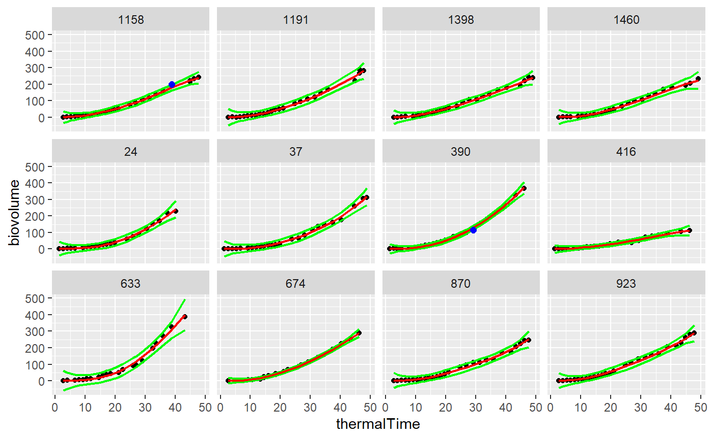

detectOutlierPoint.RmdDetection of outlier points in time courses of an experiment in PhenoArch greenhouse. This procedure can be used in any kind of time courses data sets. It uses a locfit smoothing function from the locfit library [2]. For each time course of a dataset, a locfit smoothing is applied, predictive confidence interval calculated (Y\(\_\)hat +/- threshold*Y\(\_\)hat\(\_\)se).
Points are declared outlier if outside this confidence interval. the user choose the threshold.
FuncDetectPointOutlierLocFit: detection of outlier points in time courses
@return a data.frame:
Ref: the id variable mytime: name of the time variable in datain myparam: name of the modeled variable in datain ypred: the locfit prediction sd_ypred: standard deviation of the prediction lwr: lower bound of the confidence interval upr: upper bound of the confidence interval outlier: flag of detected outlier (0 is outlier, 1 is not)
If a time course has less than 6 points, no smoothing would be done and a warning appears.
In this vignette, we use a toy data set of the openSilexStatR library (anonymized real data set).
mydata<-plant1 str(mydata)
## 'data.frame': 47022 obs. of 14 variables:
## $ Ref : Factor w/ 1680 levels "manip1_10_10_WW",..: 131 131 131 131 131 131 131 131 131 131 ...
## $ experimentAlias: Factor w/ 1 level "manip1": 1 1 1 1 1 1 1 1 1 1 ...
## $ Day : Factor w/ 42 levels "2013-02-01","2013-02-02",..: 3 4 5 6 7 9 9 10 11 12 ...
## $ potAlias : int 1 1 1 1 1 1 1 1 1 1 ...
## $ scenario : Factor w/ 2 levels "WD","WW": 2 2 2 2 2 2 2 2 2 2 ...
## $ genotypeAlias : Factor w/ 274 levels "11430_H","A310_H",..: 165 165 165 165 165 165 165 165 165 165 ...
## $ repetition : int 1 1 1 1 1 1 1 1 1 1 ...
## $ Line : int 1 1 1 1 1 1 1 1 1 1 ...
## $ Position : int 1 1 1 1 1 1 1 1 1 1 ...
## $ thermalTime : num 1.29 2.65 3.98 5.32 6.66 ...
## $ plantHeight : num 140 151 213 239 271 ...
## $ leafArea : num 0.018 0.019 0.0208 0.0222 0.0235 ...
## $ biovolume : num 0.253 0.62 1.201 1.68 3.396 ...
## $ Repsce : Factor w/ 15 levels "1_WD","1_WW",..: 2 2 2 2 2 2 2 2 2 2 ...I have chosen a smoothing parameter of 30 and a threshold of 10 to detect the outlier points.
# Selection of only 2 genotypes to speed up the process plantSel <- c("11430_H","A310_H") mydataSub <- filter(mydata,genotypeAlias %in% plantSel) resu1<-FuncDetectPointOutlierLocFit(datain=mydataSub,myparam="biovolume", mytime="thermalTime",myid="potAlias", mylevel=10, mylocfit=30)
plotDetectPointOutlierLocFit(datain=mydataSub,resuin=resu1, myparam="biovolume", mytime="thermalTime", myid="potAlias")
## Warning: Removed 15 rows containing missing values (geom_point).
## R version 4.0.2 (2020-06-22)
## Platform: x86_64-w64-mingw32/x64 (64-bit)
## Running under: Windows 10 x64 (build 18363)
##
## Matrix products: default
##
## locale:
## [1] LC_COLLATE=French_France.1252 LC_CTYPE=French_France.1252
## [3] LC_MONETARY=French_France.1252 LC_NUMERIC=C
## [5] LC_TIME=French_France.1252
##
## attached base packages:
## [1] stats graphics grDevices utils datasets methods base
##
## other attached packages:
## [1] openSilexStatR_1.1.0 locfit_1.5-9.4 dplyr_1.0.0
## [4] lubridate_1.7.9
##
## loaded via a namespace (and not attached):
## [1] tidyr_1.1.0 splines_4.0.2 dotCall64_1.0-0 gtools_3.8.2
## [5] assertthat_0.2.1 expm_0.999-5 CARBayesdata_2.1 sp_1.4-2
## [9] stats4_4.0.2 yaml_2.2.1 LearnBayes_2.15.1 truncdist_1.0-2
## [13] pillar_1.4.6 backports_1.1.8 lattice_0.20-41 glue_1.4.1
## [17] digest_0.6.25 RColorBrewer_1.1-2 colorspace_1.4-1 plyr_1.8.6
## [21] htmltools_0.5.0 Matrix_1.2-18 pkgconfig_2.0.3 raster_3.3-13
## [25] CARBayesST_3.1 gmodels_2.18.1 purrr_0.3.4 scales_1.1.1
## [29] gdata_2.18.0 tibble_3.0.3 farver_2.0.3 generics_0.0.2
## [33] ggplot2_3.3.2 ellipsis_0.3.1 magrittr_1.5 crayon_1.3.4
## [37] deldir_0.1-28 memoise_1.1.0 evaluate_0.14 GGally_2.0.0
## [41] fs_1.4.2 nlme_3.1-148 MASS_7.3-51.6 foreign_0.8-80
## [45] truncnorm_1.0-8 class_7.3-17 data.table_1.13.0 tools_4.0.2
## [49] shapefiles_0.7 lifecycle_0.2.0 matrixStats_0.56.0 stringr_1.4.0
## [53] munsell_0.5.0 compiler_4.0.2 pkgdown_1.5.1 e1071_1.7-3
## [57] evd_2.3-3 rlang_0.4.7 classInt_0.4-3 units_0.6-7
## [61] grid_4.0.2 rstudioapi_0.11 htmlwidgets_1.5.1 spam_2.5-1
## [65] crosstalk_1.1.0.1 labeling_0.3 rmarkdown_2.3 SpATS_1.0-11
## [69] boot_1.3-25 testthat_2.3.2 gtable_0.3.0 codetools_0.2-16
## [73] reshape_0.8.8 DBI_1.1.0 R6_2.4.1 gridExtra_2.3
## [77] knitr_1.29 rgdal_1.5-12 rprojroot_1.3-2 spdep_1.1-5
## [81] KernSmooth_2.23-17 desc_1.2.0 matrixcalc_1.0-3 stringi_1.4.6
## [85] Rcpp_1.0.5 vctrs_0.3.2 sf_0.9-5 leaflet_2.0.3
## [89] spData_0.3.8 tidyselect_1.1.0 xfun_0.16 coda_0.19-3